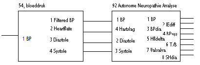

RF 2, Onset Systolische Bloeddruk
|
Omschrijving:
Autonome Neuropathie Analyse, een indicatie voor het functioneren van het hart op basis van vier onafhankelijke metingen.
Bijzonderheden:
Deze funktie is ontwikkeld voor een specifiek doel. Gebruik deze funktie nooit zonder voorafgaand overleg met de Instrumentele Dienst. De funktie kan gewijzigd worden zonder compatibiliteit te garanderen.
Toelichting:
Een typische configuratie voor deze functie is in samenhang met functie 54, bloeddruk.
|
|
 |
Noot: Merk op dat funktie 54 de hartslag met een factor 20 heeft vermenigvuldigd.
Een dergelijke configuratie heeft twee regels nodig in de rekenkanalen editor, aangevuld met regels voor de uitgangssignalen. De afbeelding hieronder toont de instellingen voor een Finapress bloeddrukmeter, de bloeddruk module op regel 1, Autonome Neuropathie Analyse op regel 2, uitgangssignalen van Autonome Neuropathie Analyse op regels 3 t/m 9 en enkele controle signalen. Merk op dat LastSample, regel 13, noodzakelijk is om de resultaten te kunnen exporteren.
|
|
Meer gedetailleerde informatie vindt u onder de 'edit functie' mogelijkheden van de rekenkanalen editor waarvan hieronder een voorbeeld.
|
|
Inputs:
Input 1 wordt niet gebruikt voor de berekeningen. Op het moment de de funktie de andere inputs gebruikt voor het berekenen van resultaten wordt input 1 doorgekoppeld naar output 1.
De default schaling voor input 4 houdt rekening met een factor 20 voor de hartslag. Funktie 54 gebruikt deze factor als (niet configureerbare) standaard uitgangsschaling.
Outputs:
De outputs van deze funktie zijn na het doorlopen van het gehele bestand gelijk aan:
Output 1 geeft aan wanneer de funktie aan het rekenen is. Op dat moment wordt het signaal van input 1 doorgegeven, op andere momenten wordt output 1 op nul gehouden. Hiervan kan gebruik worden gemaakt om b.v. het bloeddruk signaal via input kanaal 1 op te knippen in relevante en niet relevante delen. Hieronder treft u een voorbeeld aan van de output tijdens een meting.
|
|
Het is uiteraard ook mogelijk om andere signalen op input 1 te plaatsen, b.v. een constante 1. Daarmee zal output 1 nul zijn op momenten dat er niet gerekend wordt en 1 op momenten dat er wel gerekend wordt.
De waarde van outputs 2 t/m 8 zijn allen vermenigvuldigd met een individuele factor om voldoende nauwkerigheid te verkrijgen.Tijdens de berekeningen zijn de outputs anders gedefiniëerd, teneinde het rekenalgoritme te kunnen controleren. (Zie de toelichting voor verschillende metingen hieronder)
Parameters:
De Input- en Output factoren kunnen aangepast worden met de rekenkanalen editor. Hieronder staan de formulieren afgebeeld met de default constanten.
|
|
|
Metingen:
De functie bevat vier metingen
Een meting bestaat uit een rust/basis meting en een functionele meting. De meting wordt gestart met een functie toets die daaraan gekoppeld is. Het is mogelijk om een meting deel voortijdig af te breken met funktie toets F6. Het functionele deel van de meting start met functie toets F7. Het functionele deel van de meting (her)start onmiddelijk na een F7, zelfs indien de meting zich nog in het rust deel bevindt of indien het al eerder is gestart.
De metingen worden hieronder weergegeven als een tijdslijn. Boven de lijn wordt aangegeven in welke fase de meting verkeert (R = rust, B = basis meting, O = overgangsfase, A1..A3 = funktionele meting deel 1..3, niet elke funktionele meting heeft drie onderdelen). Onder de lijn wordt aangegeven welke funktie toetsen gebruikt kunnen worden.
Voorbeeld:
| R | B | | O | A1 |
|----+------|...|---+--------------|
|F1 (F6) F7 (F6)|
Deze meting wordt gestart met funktie toets F1, het functionele deel wordt gestart met F7 (nadat F1 gezien is). De meting kan op elk willekeurig moment onderbroken worden met F6 en opnieuw gestart worden met F7 (vanaf het functionele deel) of F1 (voor de totale meting). Elk onderdeel R, B, O en A1 kennen een timeout van een aantal seconden. In alle gevallen gaat de meting dan verder met het volgend onderdeel met uitzondering voor de basismeting B. Op dit punt stopt de meting en wordt slechts hervat na een F7. Het onderdeel O is een overgangsperiode om artefacten op te vangen (met een timeout van gebruikelijk 1 seconde).
Tijdens het basis deel van elke meting zijn de uitgangssignalen als volgt gedefinieerd.
1. = ingangssignaal 1.
2. Diastole Mean.
3. Systole Mean.
4. Heart rate Max.
5. Heart rate Mean.
6. Heart rate Min.
8. Controle signaal voor het functioneren van de meting, geen medische betekenis.
Tenzij anders genoemd is de waarde van een uitgangssignaal 0.
Elke meting wordt hieronder verder toegelicht.
Forced Breathing:
De gehele test duurt 6 minuten en wordt liggend uitgevoerd. Eerst 5 minuten rust, daarna gedurende 1 minuut geforceerd in-/uitademen (6 keer).De berekening wordt geinitiëerd door marker F1.De ademhaling wordt afgeleid uit het impedantie signaal, stijging=inspiratie en daling=expiratie. Voor de hartrate wordt gebruik gemaakt van het RR-interval.Tijdens de inpiratie wordt de maximale hartfrequentie bepaald en gedurende de expiratie de minimale hartfrequentie. Per respiratie wordt het verschil tussen maximale en minimale hartfrequentie (I-E-difference) bepaald. De uiteindelijke waarde wordt verkregen door de I-E-difference over de 6 respiraties te middelen.Omdat de gehele test liggend wordt uitgevoerd, zullen er weinig bewegings-artefacten zijn, daarom wordt slechts 1 seconde aan begin en einde van de werkelijke rekenperiode verwijderd.
| R | B | | O | A1 |
|----+------|...|---+--------------|
|F1 (F6) F7 (F6)|
De volgende parameters worden berekend:
1. IEdiff = Heart rate Max(A1, per ademhaling) - Heart rate Min (A1, per ademhaling)
Tijdens het functionele deel van elke meting zijn de uitgangssignalen als volgt gedefinieerd.
1. = ingangssignaal 1.
4. Heart rate Max.
5. Heart rate Mean.
6. Heart rate Min.
7. Controle signaal, bij iedere detectie van inspiratie\expiratie of expiratie\inspiratie overgang wordt dit signaal een stap opgehoogd.
8. Controle signaal voor het functioneren van de meting, geen medische betekenis.
Standing Up:
De gehele test duurt 7 minuten. Na 5 minuten liggende rust, binnen 3 seconde tot staan komen en gedurende 2 minuten staan. De eerste 4.5 minuten van de test wordt niet opgeslagen.De berekening wordt geinitiëerd door marker F2.Voor de bloeddruk wordt gebruik gemaakt van diastolische en systolische bloeddruk.Voor de hartrate wordt gebruik gemaakt van het RR-interval.
| R | B | | O | A1 | A2 | A3 |
|----+------|...|---+----+----+----|
|F2 (F6) F7 (F6)|
De volgende parameters worden berekend:
3. BPdia = Gemiddelde Diastole(B) - gemiddelde Diastole(A3)
4. BPsys = Gemiddelde Systole(B) - gemiddelde systole(A3)
5. HRdelta = HRmax(A1,2,3) - HR(B)
6. T/B ratio = HRmax(A1,2,3) / HRmin(A1,2,3)
Tijdens het rust deel van elke meting zijn de uitgangssignalen als volgt gedefinieerd.
1. = ingangssignaal 1.
2. Diastole Mean. (A1 en A3)
3. Systole Mean. (A1 en A3)
4. Heart rate Max. (A1, A2 en A3)
5. Heart rate Mean. (A1, A2 en A3)
6. Heart rate Min. (A1, A2 en A3)
8. Controle signaal voor het functioneren van de meting, geen medische betekenis.
Valsalva:
Deze test wordt in drievoud uitgevoerd. Door middel van de markers F3, F4 en F5 worden de verschillende Valsalva-tests uit elkaar gehouden. Iedere Valsalva test duurt 75 seconde. Het opgenomen deel is wat korter gehouden dan de testduur. Tijdens de test wordt alleen gekeken naar de hartrate, afgeleid uit RR-interval.
| R | B | | O | A1 | A2 | A3 |
|----+------|...|---+----+----+----|...
|F3 (F6) F7 (F6)
|---+----+----+----|...
F7 (F6)
|---+----+----+----|
F7 (F6)|
Anders dan bij de andere metingen zal een F7 toets niet de functionele meting opnieuw starten maar de volgende Valsalva meting starten. Er kunnen ten hoogste drie Valsalva metingen op deze wijze gestart worden. Indien het nodig is om de Valsalva in zijn geheel opnieuw uit te voeren dan kan dit allen met behulp van functietoets F3.
De volgende parameters worden berekend:
7. Van iedere Valsalva manoeuvre wordt de verhouding HRmax(A1) / HRmin(A3) berekend. Van de 3 Valsalva metingen wordt de hoogste Valsava Ratio geëxporteerd.
Tijdens het rust deel van elke meting zijn de uitgangssignalen als volgt gedefinieerd.
1. = ingangssignaal 1.
4. Heart rate Max. (A1 en A3)
5. Heart rate Mean. (A1 en A3)
6. Heart rate Min. (A1 en A3)
8. Controle signaal voor het functioneren van de meting, geen medische betekenis.
Sustained Handgrip:
Deze test duurt in totaal 5 minuten. Gedurende 2 minuten rust, daarna gedurende 3 minuten op 30% maximale kracht knijpen.
| R | B | | O | A1 |
|----+------|...|---+-------------|
|F4 (F6) F7 (F6)
Berekend wordt het verschil tussen maximale diastolische bloeddruk tijdens knijpen en de gemiddelde diastolische bloeddruk tijdens de periode B van de rust. Voor de bepaling van de maximaal diastolische bloeddruk wordt het signaal over 5 seconden gemiddeld.
De volgende parameters worden berekend:
8. SHdia = MaxDiastole(A1) - gemiddelde Diastole(B)
Tijdens het rust deel van elke meting zijn de uitgangssignalen als volgt gedefinieerd.
1. = ingangssignaal 1.
2. Diastole Max van lopend gemiddelde over 5 sec. (A1)
8. Controle signaal voor het functioneren van de meting, geen medische betekenis.
Resultaten:
Door middel van de menu optie [protocol], [export] is het mogelijk om de resultaten in een appart bestand te plaatsen. Dit resultaat bestaat uit leesbare tekst (ASCII) en kan geopende worden door o.a. Excell.
Om de gevens te exporteren kiest u voor Tabel output, optioneel met of zonder markers. Daarna kiest u voor de gewenste signalen. (Zie formulier hieronder). Door te kiezen voor markers krijgt u geen gedetailleerde lijst van tussenresultaten waarmee u de eindresultaten kunt controleren.
|
|
Hieronder treft u het resultaat aan van een voorbeeld, inclusief markers en tussentijdse berekeningen. (Zonder markers bevat het bestand alleen de eerste drie regels.)
© Instrumentele Dienst. Bijgewerkt op 25-6-2006.